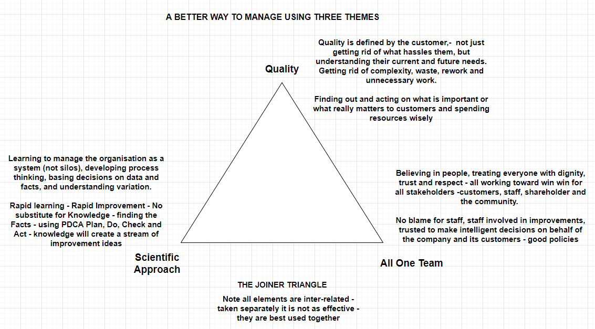

The Joiner Triangle
A better way to manage: make progress on three connected fronts, together.
The Joiner Triangle is a management model—not simply a checklist for an improvement project. Quality, Scientific Approach and All One Team need to develop together. Training in one corner alone is not enough.
Three themes for managing the whole organisation
Adapted from Brian Joiner’s Fourth Generation Management, the Triangle connects what the organisation is trying to achieve, how it learns, and how people work together. It applies to everyday management as well as improvement programmes.

Quality: defined by the customer
Develop an organisation-wide focus on what matters to customers: their current and future needs, not just the hassles they complain about today. Remove unnecessary complexity, waste, rework and avoidable work, and spend resources on what creates value for them.
In healthcare, this includes safe, effective care and patients’ experience—not simply meeting a throughput target. Ask patients and carers what matters, and investigate where the work fails to meet those needs.
Scientific Approach: understand, test and learn
Learn to manage the organisation as a system, not as separate silos. Understand the processes that produce results, base decisions on data and facts, and distinguish routine variation from evidence of change.
Use tools such as run charts and other suitable time-series charts, alongside process knowledge and experimentation. Make a prediction, test a change, compare what happened with what was expected, and use that learning to decide what to do next. Data support judgement; a chart does not identify the cause on its own.
All One Team: organise for contribution and improvement
Treat people with dignity, trust and respect. Create conditions in which staff can raise problems without blame, contribute ideas and make informed decisions. Capture those ideas, act on them where appropriate, and explain what has been learned.
Senior leadership has a particular responsibility to work on the business, not only in it: improve the policies, priorities, resources and working arrangements that shape everyone’s performance. Cooperation should support customers, staff, owners and the wider community—not one department’s results at another’s expense.
Make progress on all three fronts
The corners reinforce each other. Customer needs give improvement its purpose. Scientific learning helps people understand what to change and whether it helped. Trust, leadership and cooperation allow that knowledge to become better everyday work.
- Quality alone can remain an aspiration without learning and the means to act.
- Scientific tools alone can become reporting or training exercises disconnected from customers and staff.
- Teamwork alone cannot establish whether an explanation is right or a change is effective.
Develop capability across all three rather than treating them as sequential stages. The model guides management; it does not guarantee success or prove what caused a result.
Change the way the work is managed
For example, “improve flow” and “protect safety” can become competing departmental targets. A Triangle-based approach would connect the patient’s whole experience, evidence about the pathway, and the people able to change it.
Earlier discharge planning might reduce delay, but readiness, community support and subsequent problems still need checking. Cooperation helps expose trade-offs; it does not automatically remove them.
Questions for leaders and teams
- Quality: what matters to the people we serve, now and in the future? What hassles, waste or rework should we remove?
- Scientific Approach: what do we know about the process and its variation? What explanation will we test, and what evidence would challenge it?
- All One Team: can everyone contribute? What must leaders change in the system so that people can do better work?
- Together: are training, decisions and improvement activity strengthening all three themes?
Use outcome, process and balancing measures to connect intended benefit, implementation and possible harm.
Explore the ideas in practice
These accounts can be examined through the Triangle. This does not mean the organisations explicitly adopted the model, or establish that it caused their reported improvements.
How to take this further
Joiner’s levels of fix ask how deeply a response addresses a problem. The Triangle asks how the organisation is managed so that people can understand and improve the work. They are complementary questions.
Return to Why Improvement Programmes Fail for the complete framework.
Using a StepChange chart? Read the result and decide what to check next → A fitted step is not proof of the Triangle’s presence or success; a flat fit is not proof of its absence.
Source and interpretation
Brian L. Joiner, Fourth Generation Management: The New Business Consciousness (McGraw-Hill, 1994). The diagram and practical explanations here are Syd Stewart’s adaptation, not quotations from the book. The linked healthcare accounts are examples for discussion, not controlled tests of the model.